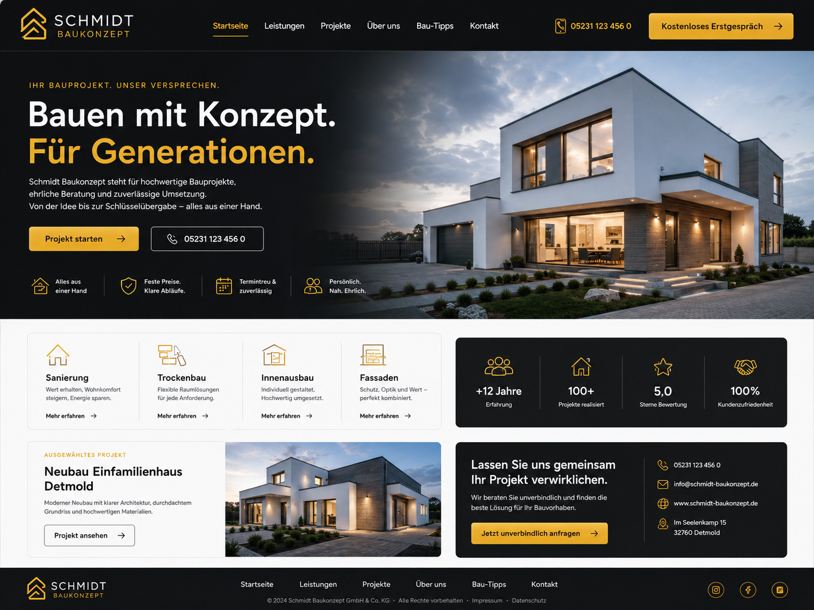
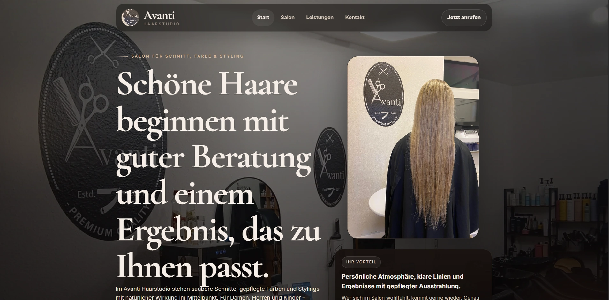
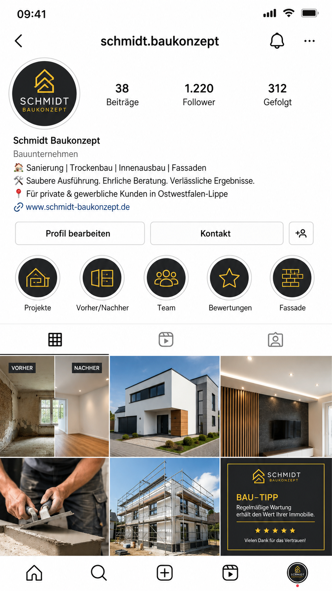
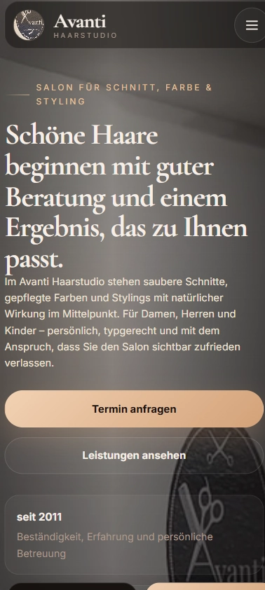
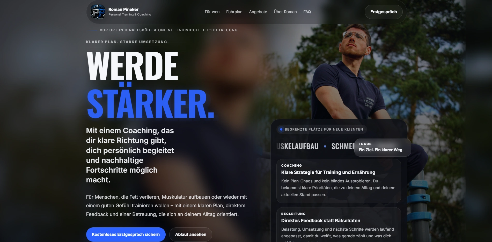
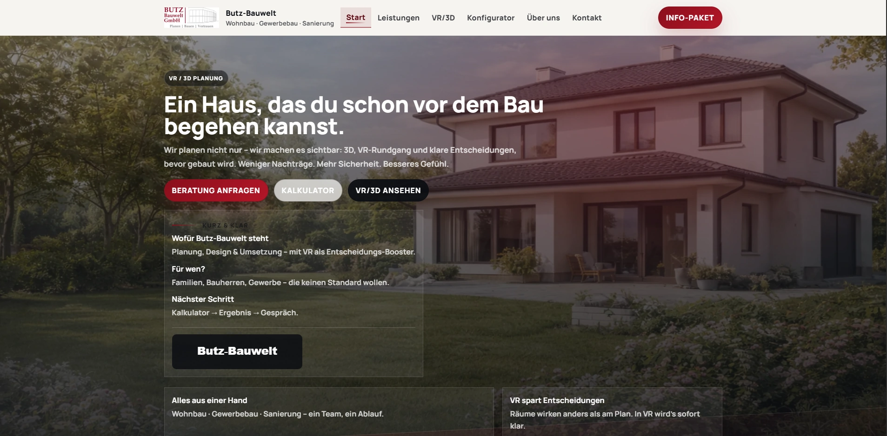
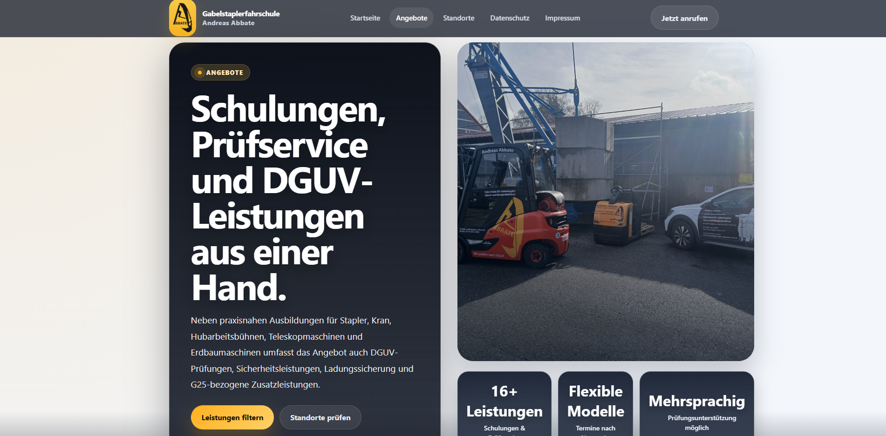
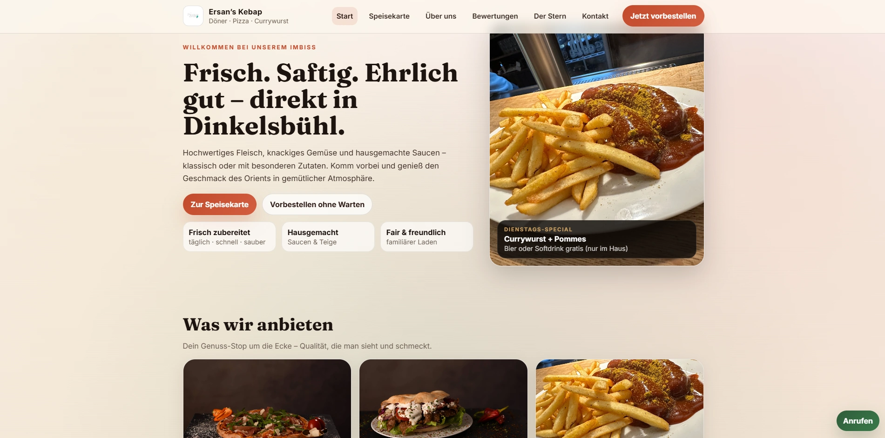

Dein Angebot wird sofort verständlich.
Klare Headlines, kurze Wege und verständliche Inhalte sorgen dafür, dass niemand lange suchen muss.
Ich gestalte Websites und Social-Media-Auftritte, die dein Angebot verständlich machen, Vertrauen aufbauen und Interessenten leichter zur Anfrage führen.




Ein guter Auftritt nimmt Fragen vorweg: Was bietest du an, für wen ist es relevant und warum sollte man gerade dich kontaktieren?
Klare Headlines, kurze Wege und verständliche Inhalte sorgen dafür, dass niemand lange suchen muss.
Ausgewählte Projekte machen sichtbar, wie professionell ein moderner Auftritt wirken kann.
Design, Bildwelt und Text arbeiten zusammen, damit dein Unternehmen stärker wahrgenommen wird.
Wenn der Besucher überzeugt ist, findet er schnell den richtigen Kontaktweg.
Viele Besucher entscheiden in wenigen Sekunden, ob ein Unternehmen seriös wirkt. Genau dort muss dein Auftritt klar, hochwertig und vertrauenswürdig sein.
Der Einstieg zeigt sofort, wofür du stehst und warum dein Angebot relevant ist.
Projektbeispiele helfen Besuchern, deine Qualität schneller einzuschätzen.
Jede Sektion unterstützt den nächsten Schritt, statt den Besucher nur optisch zu beeindrucken.
Ausgewählte Arbeiten aus verschiedenen Branchen zeigen, wie klar, hochwertig und zielgerichtet ein digitaler Auftritt aufgebaut werden kann.




Am Anfang steht nicht das Design, sondern die Frage: Was muss dein Kunde verstehen, damit er Vertrauen fasst und den nächsten Schritt geht?
Wir formulieren verständlich, was du anbietest, für wen es gedacht ist und warum es relevant ist.
Sektionen, Bilder, Texte und CTAs werden so aufgebaut, dass Besucher nicht abspringen, sondern weiterlesen.
Mobile Ansicht, Lesbarkeit, Kontrast, Links, Formulare und Ladeverhalten werden vor der Übergabe kontrolliert.
Dann lass uns deinen digitalen Auftritt so aufbauen, dass Besucher schneller verstehen, warum sie bei dir richtig sind.